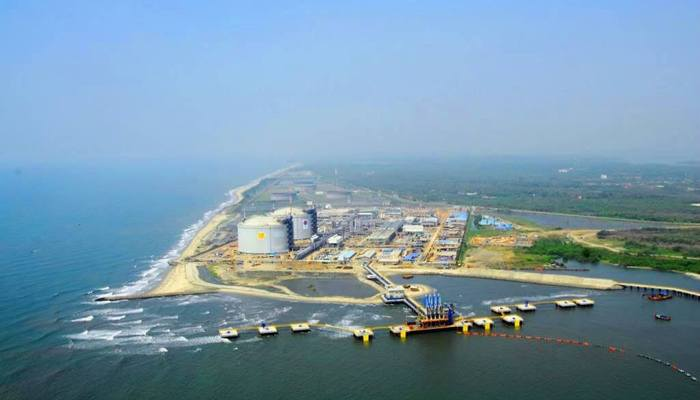
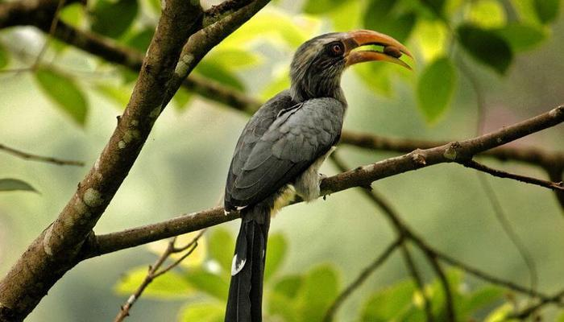
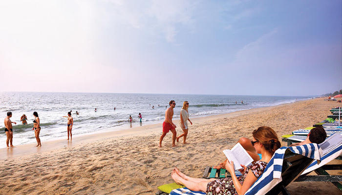
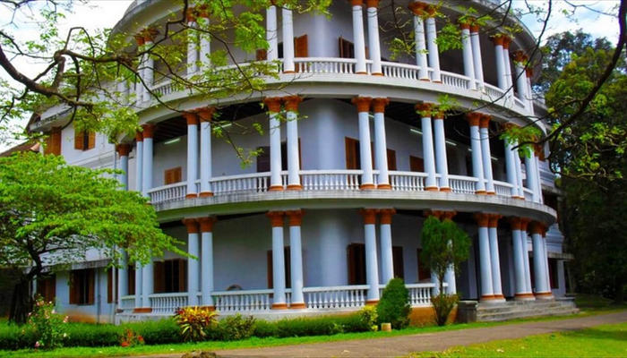
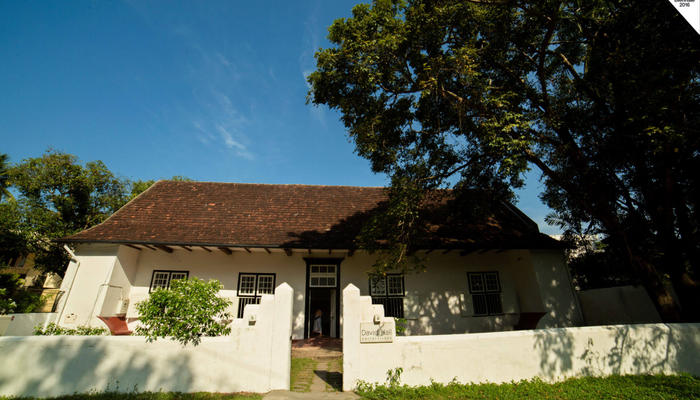
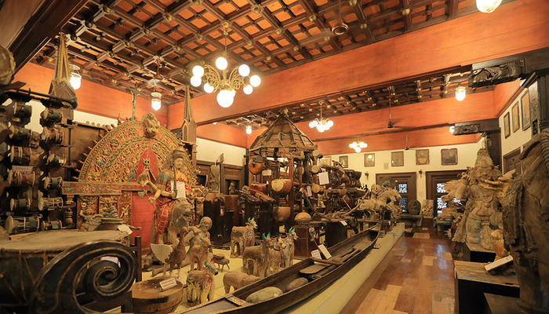

VYPEEN ISLAND
Vypeen is one of the popular places to visit in Ernakulam in one day. A short and beautiful ferry ride from the city will take to this serene island which is dotted with beaches, backwaters and an array of restaurants and hotels. A desktop worthy scenery away from the bustling environment is what makes Vypeen island one of the best places to visit in Ernakulam for lovers.

THATTEKKAD BIRD SANCTUARY
One of the first bird sanctuaries in Kerala and undeniably a haven for nature enthusiasts. In the words of Salim Ali (world famous ornithologist), Thattekkad is the “richest bird sanctuary in India” since it is home to hundreds of different endangered species of migratory birds. This thick deciduous forest has plantations of mahogany, teak, rosewood and rubber running through it. Make sure to bring along a pair of binoculars to get a glimpse of the birdlife. The best time to visit would be between November and March.

CHERAI BEACH
Located on the north end of Vypin island in Kochi, Cherai beach is a 15 km stretch of wild and rugged beauty. Although not overwhelmed by hotels or major restaurants, the beach is dotted with small shacks selling local snacks like pakoras and chips. Stunning lagoons, wide paddy fields and coconut grooves adorn the road to the beach. Ernakulam sightseeing is not complete without a visit to Cherai beach.

HILL PALACE
Hill Palace is a prominent Heritage museum, which exhibits countless number of archaeological relics and belongings of the Maharaja of Kochi. This famous palace, which was built in 1865, comprises forty-nine buildings with enchanting gardens and a children’s park. It is opened to the public from 9 AM to 12 noon and from 2 PM to 4: 30 PM.

DAVID HALL ART GALLERY
A Dutch bungalow near the Dutch cemetery in Fort Kochi got renovated to become a major attraction for art lovers. The gallery exhibits works by prominent and local artists. Travellers will also be delighted to find a cosy garden restaurant which serves a variety of cakes and snacks; however the café is known for its fresh and crispy pizzas.

FOLKLORE MUSEUM
Folklore Museum is one of the popular tourist spots in the city. It is a three storied complex that showcases cultural exhibits and tribal artefacts. The Museum design was greatly inspired by the Malabar architecture. The museum is opened to the public from 9: 30 Am to 7 PM on a regular basis.